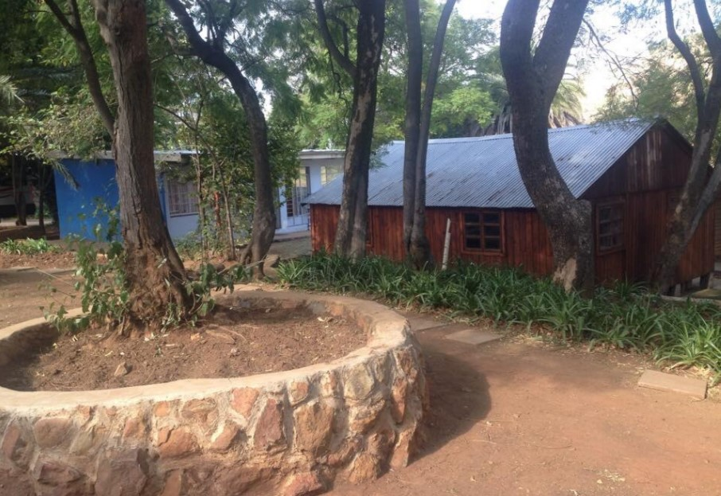
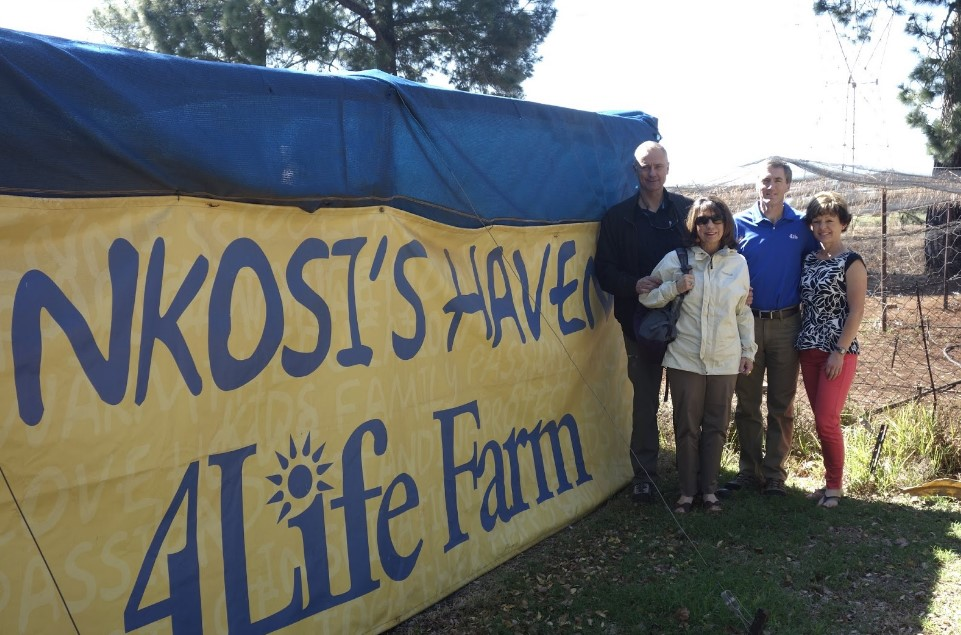
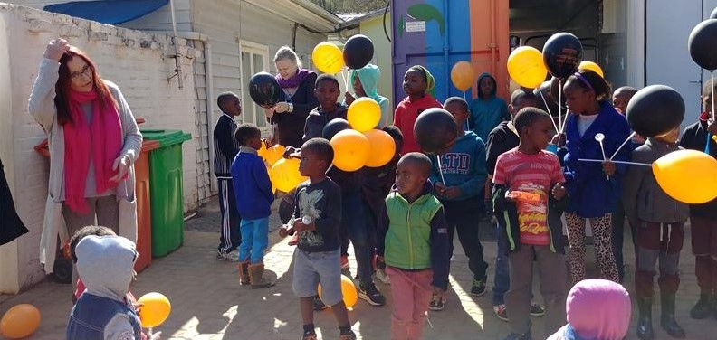

Nkosi's Haven Village (Alan Manor)

The village was created in 2002 to empower residents, provide education, and offer a safe sanctuary.
-
The Village includes 17 residential cottages, supported by facilities like:
- Sickbay/Therapy block/Baby daycare
- Classrooms/Library/Workshops
- Industrial kitchen/Leisure spaces
- Preschool which is still in development etc.
Nkosi’s 4Life Farm

The farm supports sustainability, provides food, and helps women earn income.
Objectives of the Farm:
- Crops feed the residents and communities
- Generate profit by selling extra produce
- Help people affected by HIV/AIDS
Nkosi’s Haven Preschool Development

This project emphasizes the long-term development of children in the village.
Objectives of the Preschool:
- Provide Early Childhood Education: Children 2–6 learn literacy, numeracy, and social skills
- Support Cognitive and Emotional Development: Age-appropriate learning and therapeutic play
- Create Routine and Stability: Children who experienced trauma can grow freely
- Enable Early HIV Education: Age-appropriate health education for children affected by HIV
- Empower Mothers Through Participation: Residents trained as assistants/staff
- Prepare Children for Schooling: Ready for Grade R and primary school